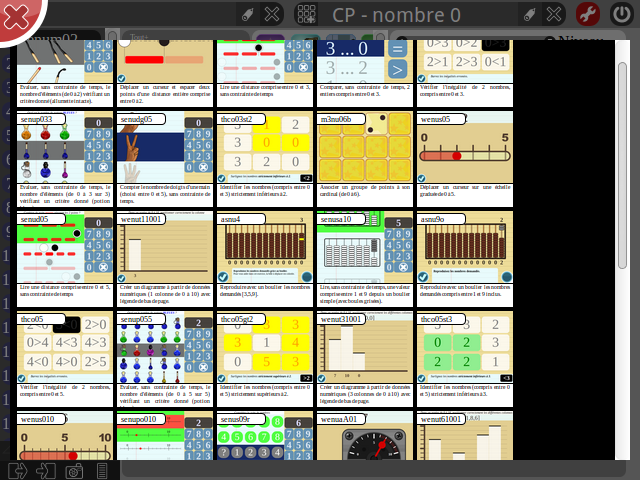

TiBIbi est un logiciel d'édition permettant de réaliser des séries d'exercices issus de la base jLoDb. Ce module n'est pas spécifiquement destiné à une utilisation grand public. Il s'agit avant tout d'un outil de production très utile pour scénariser des séquences d'exercices. Si ces séquences peuvent être utilisées directement depuis TiBIbi, elles seront plus généralement exportées vers d'autres modules comme TiBIbo et TiBIbu.
TiBIbi est un module du projet jLoDb. En tant que tel, il est directement accessible depuis la section Modules de la page principale du projet.
TiBIbi peut être utilisé en tant qu'application web sur la plupart des plate-formes mobiles. La procédure d'installation, qui est la même pour tous les modules, est détaillée dans le chapitre Modules de la section jLoDb.
L'identification de l'utilisateur se fait en cliquant sur le bouton valider après avoir renseigner le nom et le mot de passe dans les zones adéquates. Ce système d'authentification permet à l'utilisateur de sauver ses travaux directement sur le serveur et de pouvoir y accéder depuis n'importe quel poste de travail.
L'icône à droite du nom utilisateur permet de faire apparaître une ligne supplémentaire. En remplissant, les 3 zones que sont le nom, le mot de passe et sa confirmation, il est possible de créer un nouveau compte.
Contrairement à d'autres modules comme TiBIbo et TiBIbu, il ne sera pas possible de modifier son profil utilisateur ici.
Une fois identifié, l'utilisateur peut se déconnecter en effectuant un double-clic sur l'icône arrêt/marche situé en haut à droite de l'écran. Il arrive que TiBIbi soit lancé depuis d'autres modules. Dans ces cas-là, l'image du bouton de déconnexion est remplacé par un icône de validation qui permet alors de retourner vers le programme appelant.
La page d'accueil de TiBIbi présente en haut de l'écran une barre de menu. La partie droite de cette barre propose les outils nécessaires à la bonne gestion des séries d'exercices de l'utilisateur.
Les 3 icones ci-contre permettent respectivement de créer une nouvelle série, de modifier le nom de la série active et enfin de la supprimer par double-clic. Entre ces icônes, un menu déroulant permet de choisir une série parmi celles déjà créées par l'utilisateur.
Une fois la série d'exercices sélectionnée grâce au menu déroulant, il est possible d'éditer et de modifier celle-ci en cliquant sur le bouton en forme de clé. TiBIbi ouvre alors la page d'édition qui se compose de 2 parties distinctes : à gauche, sont listés les exercices composant la série active tandis que le reste de la fenêtre est occupée par le moteur de recherche tel qu'il a été présenté dans la section jLoDb. La zone de résultats où sont listés les exercices correspondant aux différents paramètres de la recherche, présente ici 2 différences significatives par rapport à celle de la page jLoDb.
La zone de gauche, où les exercices de la série sont sélectionnables par simple clic, offre 2 séries d'options permettant d'agir sur les exercices de façon individuelle ou collective.
L'exercice sélectionné (en rouge) monte ou descend dans la liste.
L'exercice sélectionné est lancé dans la fenêtre principale ou dans une fenêtre nouvellement créée. Cette dernière option est largement utilisée pour permettre les captures d'écrans des différents exercices.
L'identifiant de l'exercice sélectionné est envoyé vers le moteur de recherche afin de permettre à l'utilisateur d'en trouver d'éventuelles alternatives.
Grâce à un double-clic sur le bouton de suppression, il est possible d'enlever un exercice de la série en cours d'écriture.
Ces 2 commandes permettent respectivement d'exporter et d'importer la série d'exercices dans un format texte. Ce format est construit comme une suite d'identifiants séparés par une virgule. Les exercices importés sont placés à la suite des exercices éventuellement présents dans la série en cours. A noter que pour des questions d'inter-opérabilité, toutes les données issues du projet jLoDb peuvent être, à tout moment, exportées au format texte.
Cet outil affiche la série d'exercices sous forme graphique, permettant d'en avoir ainsi une vision plus globale. Depuis cette fenêtre, il est également possible d'ordonner les exercices par simple glisser-déposer.
Enfin, cette dernière option exporte un aperçu de la série destiné à l'impression.
Le bouton en forme de clé permet depuis la page d'édition de retourner vers la page d'accueil, c'est à dire vers la page de présentation. Ici, la série active, qui se présente désormais sous une forme plus accessible, peut être exécutée en cliquant sur l'exercice souhaité. Chaque exercice, une fois terminé, propose à l'utilisateur de recommencer l'exercice, de retourner à la page principale ou de passer à l'exercice suivant si la note obtenue le permet.
Chaque fois qu'un exercice est terminé, une série d'étoiles apparaît sur l'icone correspondant. 3 étoiles pour la note maximale de A, 2 étoiles pour B, etc. Sans opération spécifique, ces résultats ne sont pas sauvegardés et un rechargement de la page en effacera toute trace.
Dans le cas d'une utilisation autonome de TiBIbi, l'utilisateur peut souhaiter sauver les résultats obtenus. C'est ce qu'il va être possible de faire grâce aux profils d'utilisation et aux commandes associées que l'on retrouve en haut à gauche de l'écran.
Comme pour la gestion des séries, Les 3 icones ci-contre permettent respectivement de créer un nouveau profil d'utilisation, d'en modifier le nom et de le supprimer par double-clic. Entre ces icônes, un menu déroulant permet de choisir un profil parmi ceux déjà créés.
La sélection d'un profil permet de sauvegarder la progression effectuée au sein de la série d'exercices active. Cette progression est, bien évidemment, attachée au profil sélectionné. Aussi, un autre profil permettra de sauvegarder une autre progression en toute indépendance.